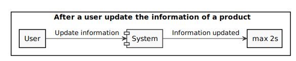
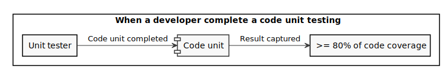
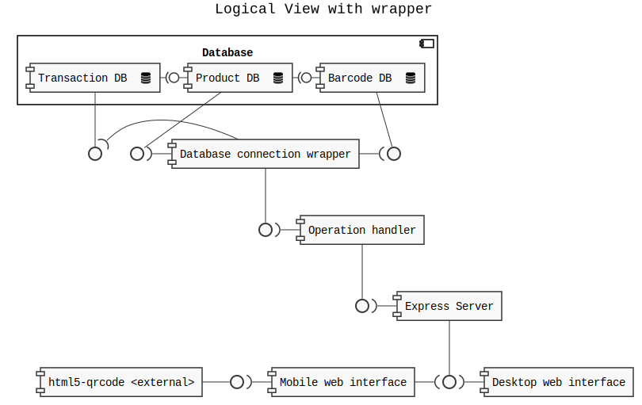
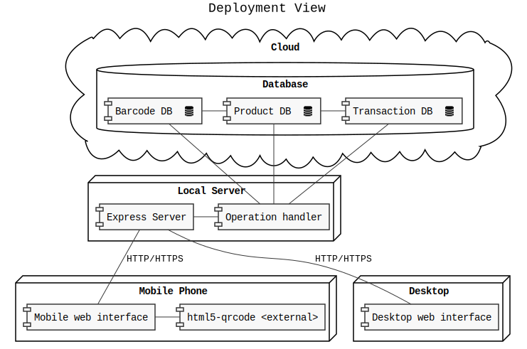

demo
Getting started
You will use Markdown, PlantUML, architectural decision records, feature models and connector views to describe a software architecture model about your own project.
This document will grow during the semester as you sketch and refine your software architecture model.
When you are done with each task, please push so we can give you feedback about your work.
We begin by selecting a suitable project domain.
0. Domain Selection
Submit the name and brief description (about 100 words) of your domain using the following vision statement template:
For [target customers]
Who [need/opportunity/problem]
The [name your project]
Is [type of project]
That [major features, core benefits, compelling reason to buy]
Unlike [current reality or competitors]
Our Project [summarize main advantages over status quo, unique selling point]
Please indicate if your choice is:
- a project you have worked on in the past (by yourself or with a team)
- a project you are going to work on this semester in another lecture (which one?)
- a new project you plan to build in the future
- some existing open source project you are interested to contribute to
The chosen domain should be unique for each student.
Please be ready to give a 2 minute presentation about it (you can use one slide but it's not necessary)
Project Name: Warehouse Management System
Project Type: a project I have worked on in the past
Vision Statement: This project is for shops with a local warehouse that need to manage the stock of their products. The warehouse management system is a web application that allows the shop to manage the stock of their products both locally and remotely. The system allows the shop to add new products, to update the stock of the products, to see the list of products and to see the details of a product. The system is different from other systems because the user host its own database and he can use a smartphone or a webcam to read barcodes to update the stock of the products.
Additional Information: Each product can have multiple barcodes depending on how much it contains, for example if a product has a packet with 10 units with its own barcode it can be registered in the system to make faster operations but if a product has two different barcodes, since they might changes in time, it can have two barcodes for the single unit.
1. Architectural Decision Records
Software architecture is about making design decisions that will impact the quality of the software you plan to build.
Let's practice how to describe an architectural decision. We will keep using ADRs to document architectural decisions in the rest of the model.
Use the following template to capture one or more architectural design decisions in the context of your project domain
ADR #01: Database location
- What did you decide?
The machine that runs the server also runs the database.
- What was the context for your decision?
To improve the stability and the performance of the system, I need to decided where to run the database and the server with thinking about the budget that a final user can have.
- What is the problem you are trying to solve?
The system must have very good performance and stability, and the budget of the final user is limited.
- Which alternative options did you consider?
- Run the database and the server in two different machine.
- Run the database in the same machine that runs the server.
- Which one did you choose?
The second one: Run the database in the same machine that runs the server.
- What is the main reason for that?
The main reason is that the server machine is a very powerful machine, and the database is not a very heavy database, so the performance and the stability of the system will be better if the database runs in the same machine that runs the server.
List the positive consequences (pros) of your decision:
- More performance.
- More stability.
- Less cost.
If any, list the negative consequences (cons)
- If the server machine fails, the database will fail too.
- If the server machine is very slow, the database will be very slow too.
ADR #02: Export stocks
- What did you decide?
The user has the ability to export the stocks to a CSV file.
- What was the context for your decision?
Some user may want to do some analysis on the stocks they have. In order to do that, they need to export the stocks to a file that can be read by other programs. For example, a user may want to export the stocks to a spreadsheet program to do some analysis on the stocks or to check if the stocks are correct with the one he has in real life.
- What is the problem you are trying to solve?
The user may already have some programs that can read the data from a file and do some analysis on the stocks.
- Which alternative options did you consider?
- The user can export the stocks to a CSV file.
- The user can export the stocks to a JSON file.
- The user can export the stocks to a XML file.
- The user can export the stocks to a PDF file.
- Which one did you choose?
The first one: The user can export the stocks to a CSV file.
- What is the main reason for that?
The main reason is that the CSV file is the most common file format for spreadsheets and for data analysis and it is the most common file format that can be read by other programs.
List the positive consequences (pros) of your decision:
- The user can export the stocks to a CSV file and do their own analysis on the stocks without needing to use this program.
- This program still simple and easy to use since it doesn't have to do any analysis on the stocks.
If any, list the negative consequences (cons)
- The user may not be able to do some analysis on the stocks because the CSV file doesn't have all the information that the user may need.
- The user may not have a program that can read the CSV file and do the analysis that the user wants to do.
ADR #03: Product barcodes
- What did you decide?
Each product can has multiple barcodes with different types (EAN, UPC, etc.) and each barcode correspond to a precise amount of that product. For example, a product can have 2 barcodes, one with 1 unit and another with 10 units.
- What was the context for your decision?
Some product can be stored in different ways, for example, a product can be stored in a box of 10 units or in a box of 100 units. In this case, the product will have 3 barcodes, one with 1 unit, one with 10 units and another one with 100 units but, since the are different amounts of the same product the need to be stored as one product.
- What is the problem you are trying to solve?
The user must be able to store the same product in different way and the system must know how many units of that product are in the inventory.
- Which alternative options did you consider?
- Each product can has only one barcode that correspond to 1 unit of the product.
- Each product can has multiple barcodes with different types (EAN, UPC, etc.) and each barcode correspond to a precise amount of that product.
- Which one did you choose?
The second option: Each product can has multiple barcodes with different types (EAN, UPC, etc.) and each barcode correspond to a precise amount of that product.
- What is the main reason for that?
The user must be able to store the same product in different way and it is necessary to know how many units of that product are in the inventory.
List the positive consequences (pros) of your decision:
- The user can store the same product in different ways.
- The data of the inventory is more accurate.
- The database is more organized.
- The number of barcodes is not limited.
- The number of products represent the real one.
2. Quality Attribute Scenario
Pick a scenario for a specific quality attribute. Describe it with natural language.
Refine the scenario using the following structure:

Stimulus: condition affecting the system
Source: entity generating the stimulus
Environment: context under which stimulus occurred (e.g., build, test, deployment, startup, normal operation, overload, failure, attack, change)
Response: observable result of the stimulus
Measure: benchmark or target value defining a successful response
First Scenario
Quality: Recoverability
Scenario: In case of power failure, rebooting the system should take up to 30 seconds.
Second Scenario
Quality: Performance
Scenario: In case the user read a barcode, the system should update the stock of the product in less than 1 second.
Third Scenario
Quality: Scalability
Scenario: In case a new client try to connect to the system, the system should accept the connection in less than half a second
Why Scalability and not Performance?
Fourth Scenario
Quality: Usability
Scenario: In case the user want to delete an operation to minimize the impact of errors, the system should delete the operation in less than 2 seconds.
Why Usability and not Performance?
Undo is a great usability feature to recover from mistakes. The 2 second constraint however makes the scenario also relevant for performance.
Fifth Scenario
Quality: Performance
Scenario: In case the user want to update the information of a product, the system should update the information in less than 2 seconds.
Overlap between environment and source/stimulus.
Also, performance was already modeled before in the first scenario.
Sixth Scenario
Quality: Testability
Scenario: Each code unit should have at least 80% of code coverage during the development phase.
Environment inconsistent with the scenario text (copy paste?)
Stimulus could be clarified with "test" or "run test" or "check"
Seventh Scenario
Quality: Modifiability
Scenario: In case the developer, at design time, want to change the UI, the developer should be able to do it in less than 3 hours with no side effect.
3. Quality Attribute Tradeoff
Pick a free combination of two qualities on the map and write your name to claim it.
Then write a short text giving an example for the tradeoff in this assignment.
Portability vs. Performance (Example)
Developing an app natively for each OS is expensive and time consuming, but it benefits from a good performance. Choosing a cross-platform environment on the other hand simplify the development process, making it faster and cheaper, but it might suffer in performance.
Simplicity vs. Compatibility
Developing a system that is simple to use and understand is a good thing as developing an system that can be integrated with various other products. But when we want to make our system simple to use and understand but also compatible with various other products the chances that the product becomes complex to use and the architecture of the product becomes complex are very high. That also makes the system even more difficult to develop and maintain.
Performance vs. Modifiability
To develop a system that is fast and efficient we probably need to use some code tricks, optimizations and rely on execution side effect to make the system faster. This approach can make the code more complex and difficult to understand and even small changes can have a big impact on the system performance and make the system slower. On the other hand, if we want to make the system easy to understand and modify we probably need to reduce the use of code tricks and optimizations and don't rely on execution side effects.
Usability vs. Portability
Developing a system that is easy to use and understand might rely on some specific features of a specific OS or hardware, but it will increase the modification need to make the system runs on different OSs with minimal modification. Different platforms and OSs impose different constraints and offer variable usability characteristics.
4. Feature Modeling
In the context of your chosen project domain, describe your domain using a feature model.
The feature model should be correctly visualized using the following template:


If possible, make use of all modeling constructs.
5. Context Diagram
Prepare a context diagram to define the design boundary for your project.
Here is a PlantUML/C4 example to get started.

Make sure to include all possible user personas and external dependencies you may need.
6. Component Model: Top-Down
Within the context of your project domain, represent a model of your modular software architecture decomposed into components.
The number of components in your logical view should be between 6 and 9:
- At least one component should be further decomposed into sub components
- At least one component should already exist. You should plan how to reuse it, by locating it in some software repository and including in your model the exact link to its specification and its price.
- At least one component should be stateful.
The logical view should represent provide/require dependencies that are consistent with the interactions represented in the process view.
The process view should illustrate how the proposed decomposition is used to satisfy the main use case given by your domain model.
You can add additional process views showing how other use cases can be satisfied by the same set of components.
This assignment will focus on modularity-related decisions, we will worry about deployment and the container view later.
Here is a PlantUML example logical view and process view.


Logical View
Process Views
Use Case #1:
A user use the phone camera to scan a barcode and load/unload the corresponding product.
Use Case #2:
A user use the desktop web application to scan a barcode and see the corresponding product information.
Use Case #3:
A user use the desktop web application to update the product information from the name of the product.
7. Component Model: Bottom-Up
Within the context of your project domain, represent a model of your modular software architecture decomposed into components.
To design this model you should attempt to buy and reuse as many components as possible.
In addition to the logical and process views, you should give a precise list to all sources and prices of the components you have selected to be reused.
Write an ADR to document your component selection process (indicating which alternatives were considered).
Logical View

Process View
Use Case:
Two user are connected to the system one using the desktop web interface and the other using the mobile application. The user using the desktop web application use use a barcode to load/unload the corresponding product. The user using the mobile application need to see the list of the done operations updated automatically when a new operation is done.
ADR
ADR: Scan barcodes using the camera of the phone
- What did you decide?
The user can scan a barcode from a mobile device using the integrated camera by implementing the Html5-QRCode library.
- What was the context for your decision?
Each user can use a lot of different devices to access the system. The user must be able to insert easily a barcode in the system independently on the device he is using.
- What is the problem you are trying to solve?
The user must be able to insert easily a barcode in the system. If the user is using a mobile device he can use the integrated camera to scan the barcode.
- Which alternative options did you consider?
- Use "Html5-QRCode" library (https://github.com/mebjas/html5-qrcode)
- Use "Barcode and QR Code Scanner SDK for Web" (https://www.dynamsoft.com/barcode-reader/sdk-javascript/)
- Use "QuaggaJS" library (https://serratus.github.io/quaggaJS/)
- Use "JsBarcode" library (https://github.com/LazarSoft/jsqrcode)
- Which one did you choose?
The first option: Use "Html5-QRCode" library (https://github.com/mebjas/html5-qrcode)
- What is the main reason for that?
This library is open source, well documented, is easy to use and it is compatible with the most common browsers.
List the positive consequences (pros) of your decision:
- The user is able to scan every type of barcodes or QR codes from almost every device and from almost every browser.
- The user is able to scan a barcode from a mobile device using the integrated camera.
- The user is able to scan a barcode from a desktop device using a webcam.
8. Interface/API Specification
In this iteration, we will detail your previous model to specify the provided interface of all components based on their interactions found in your existing process views.
choose whether to use the top down or bottom up model. If you specify the interfaces of the bottom up model, your interface descriptions should match what the components you reuse already offer.
decide which interface elements are operations, properties, or events.
Get started with one of these PlantUML templates, or you can come up with your own notation to describe the interfaces, as long as it includes all the necessary details.
The first template describes separately the provided/required interfaces of each component.

The second template annotates the logical view with the interface descriptions: less redundant, but needs the logical dependencies to be modeled to show which are the required interfaces.

9. Connector View
Extend your existing models introducing the connector view
For every pair of connected components (logical view), pick the most suitable connector. Existing components can play the role of connector, or new connectors may need to be introduced.

Make sure that the interactions shown in the process views reflect the primitives of the selected connector
ADR
ADR: The three database need to connect to the operation handler
What did you decide? The three database, the one for the items, the one for the codes and the one for the transactions, must use the same connection to the operation handler.
What was the context for your decision? The operation handler need to access the three databases to perform the operations.
What is the problem you are trying to solve? The problem is to connect the three databases to the operation handler in a fast, stable and secure way.
Which alternative options did you consider? The alternatives are:
- Connect the three databases to the operation handler using a single connection
- Connect the three databases to the operation handler using three different connections
Which one did you choose? I choose to connect the three databases to the operation handler using a single connection.
What is the main reason for that? The main reason is that the operation handler need to access the three databases in different moments to perform the operations and one connection is faster and more safe than three different connections.
10. Adapters and Coupling
- Highlight the connectors (or components) in your existing bottom-up design playing the role of adapter. (We suggest to use the bottom-up design since when dealing with externally sourced components, their interfaces can be a source of mismatches).
- Which kind of mismatch** are they solving?
- Introduce a wrapper in your architecture to hide one of the previously highlighted adapters
- Where would standard interfaces play a role in your architecture? Which standards could be relevant in your domain?
- Explain how one or more pairs of components are coupled according to different coupling facets
- Provide more details on how each adapter solves the mismatches identified using pseudo-code or the actual code
- How can you improve your architectural model to minimize coupling between components? (Include a revised logical/connector view with your solution)
** If you do not find any mismatch in your existing design we suggest to introduce one artificially.
Hints
(1) Should we find cases where two components cannot communicate (and are doing it wrongly) and highlight they would need an adapter?, or cases where we have already a "component playing the role of adapter in the view" and highlight only the adapter?
Both are fine. We assumed that if you draw a dependency (or a connector) the interfaces match, but if you detect that the components that should communicate cannot communicate then of course introduce an adapter to solve the mismatch
(2) Please show the details about the two interfaces which do not match (e.g., names of parameters, object structures) so that it becomes clear why an adapter is needed and what the adapter should do to bridge the mismatch
(5-6) These questions are about the implications on coupling based on the decisions you documented in the connector view. Whenever you have a connector you couple together the components and different connectors will have different forms of coupling
For example, if you use calls everywhere, do you really need them everywhere? is there some pair of components where you could use a message queue instead?
Regarding the coupling facets mentioned in question 5. You do not have to answer all questions related to " discovery", "session", "binding", "interaction", "timing", "interface" and "platform" (p.441, Coupling Facets). Just the ones that you think are relevant for your design and by answering them you can get ideas on how to do question 6.
Solved mismatches
Operation granularity
The three databases connectors play the role of adapters between the "operation handler" and the three databases because the "operation handler" can not talk directly to the MongoDB databases. This adapters is also necessary because the "operation handler" need to do some complicated operation on the databases that imply to make a lot of call to the databases and it may cause some problems to the final users.

Standard interfaces
The standard interfaces that are used in this system are:
- HTTP/HTTPS for the communication between the two web interfaces and the express server
- SQL for the communication between the databases wrapper and the three databases
- JSON object to communicate between the express server and the operation handler and also between the operation handler and the databases wrapper
Coupling
In this part we will analyze the coupling n between the two web interfaces (mobile web interface and desktop web interface ) and the express server. The components doesn't share a state since in each request done to the express server all the data needed are passed. The components are coupled by the interaction and timing facet because they need to communicate with each other to exchange the data for the operation that the user need to do and they need to be available at the same time. Since the system is a web based application the Interface/API of the express server and the platform on which it run can changed without affecting the two web interfaces.
11. Physical and Deployment Views
a. Extend your architectural model with the following viewpoints:
Physical or Container View
Deployment View
Your model should be non-trivial: include more than one physical device/virtual container (or both). Be ready to discuss which connectors are found at the device/container boundaries.
b. Write an ADR about which deployment strategy you plan to adopt. The alternatives to be considered are: big bang, blue/green, shadow, pilot, gradual phase-in, canary, A/B testing.
c. (Optional) Prepare a demo of a basic continuous integration and delivery pipeline for your architectural documentation so that you can obtain a single, integrated PDF with all the viewpoints you have modeled so far.
For example:
- configure a GitHub webhook to be called whenever you push changes to your documentation
- setup a GitHub action (or similar) to build and publish your documentation on a website

ADR
ADR : Deployment strategy
- What did you decide?
Use a blue/green deployment strategy to deploy the application.
- What was the context for your decision?
It's necessary to select a deployment strategy to deploy the application.
- Which alternative options did you consider?
- big bang
- blue/green
- pilot
- gradual phase-in
- canary
- A/B testing
- Which one did you choose?
The blue/green deployment strategy.
- What is the main reason for that?
We want to deploy the application without downtime and with the possibility to rollback to the previous version if needed to avoid data corruption or inconsistency.
12. Availability and Services
The goal of this week is to plan how to deliver your software as a service with high availability.
- If necessary, change your deployment design so that your software is hosted on a server (which could be running as a Cloud VM). Your SaaS architecture should show how your SaaS can be remotely accessed from a client such as a Web browser, or a mobile app
- Sketch your software as a service pricing model (optional)
- How would you define the availability requirements in your project domain? For example, what would be your expectation for the duration of planned/unplanned downtimes or the longest response time tolerated by your clients?
- Which strategy do you adopt to monitor your service's availability? Extend your architecture with a watchdog or a heartbeat monitor and motivate your choice with an ADR.
- What happens when a stateless component goes down? model a sequence diagram to show what needs to happen to recover one of your critical stateless components
- How do you plan to recover stateful components? write an ADR about your choice of replication strategy and whether you prefer consistency vs. availability. Also, consider whether event sourcing would help in your context.
- How do you plan to avoid cascading failures? Be ready to discuss how the connectors (modeled in your connector view) impact the reliability of your architecture.
- How did you mitigate the impact of your external dependencies being not available? (if applicable)
1
2
The pricing model I have decide to use is based on the amount of products that user wants to store in the remote databases and also the number of clients he wants to use simultaneously:
- Base plan : 100 products, 5 simultaneous clients == 0.99 CHF/month
- Pro plan : 500 products, 20 simultaneous clients == 2.99 CHF/month
- Full plan : 1000 products, 100 simultaneous clients == 4.99 CHF/month
I have also think a plan for big business that wil change the price based on the number of connected clients and number of product stored
- Business plan: 9.99 fixed + 0.19 * new client + 0.09 * product for each month
3
The system must be always available during working time so the planned downtimes must be during the night time for less than 3 hours and the longest response time tolerated by your clients, during day time, must be less than 1 hour.
4
ADR
ADR : Monitor strategy
- What did you decide?
Use a watchdog to monitor the availability
- What was the context for your decision?
It's necessary to select a monitor strategy to check the availability of the service.
- Which alternative options did you consider?
- watchdog
- heartbeat
- Which one did you choose?
A watchdog strategy.
- What is the main reason for that?
The watchdog can be used to also monitor if each part of the service is working correctly and also measure the response time to check if it is necessary to improve the server capacity to keep the availability.
5
Operation handler goes down
6
7
Since I have opted to use a watchdog I can use it to prevent overloaded servers using the response time for some types of request and so limit the probability of cascading failures. Other way to limit cascading failure is to create a new operation handler dedicated for users that will have a high number of concurrent clients since they can generate a high number of request and so they will be divided on the different handler
8
The only external dependency of this system is "html5-qrcode" which will always be available as it runs locally in the user's mobile phone.
13. Flexibility
Only dead software stops changing. You just received a message from your customer, they have an idea. Is your architecture ready for it?
Pick a new use case scenario. Precisely, what exactly do you need to change of your existing architecture so that it can be supported? Model the updated logical/process/deployment views.
Pick another use case scenario so that it can be supported without any major architectural change (i.e., while you cannot add new components, it is possible to extend the interface of existing ones or introduce new dependencies). Illustrate with a process view, how your previous design can satisfy the new requirement.
Change impact. One of your externally sourced component/Web service API has announced it will introduce a breaking change. What is the impact of such change? How can you control and limit the impact of such change? Update your logical view
Open up your architecture so that it can be extended with plugins by its end-users. Where would be a good extension point? Update your logical view and give at least one example of what a plugin would actually do.
Assuming you have a centralized deployment with all stateful components storing their state in the same database, propose a strategy to split the monolith into at least two different microservices. Model the new logical/deployment view as well as the interfaces of each microservice you introduce.